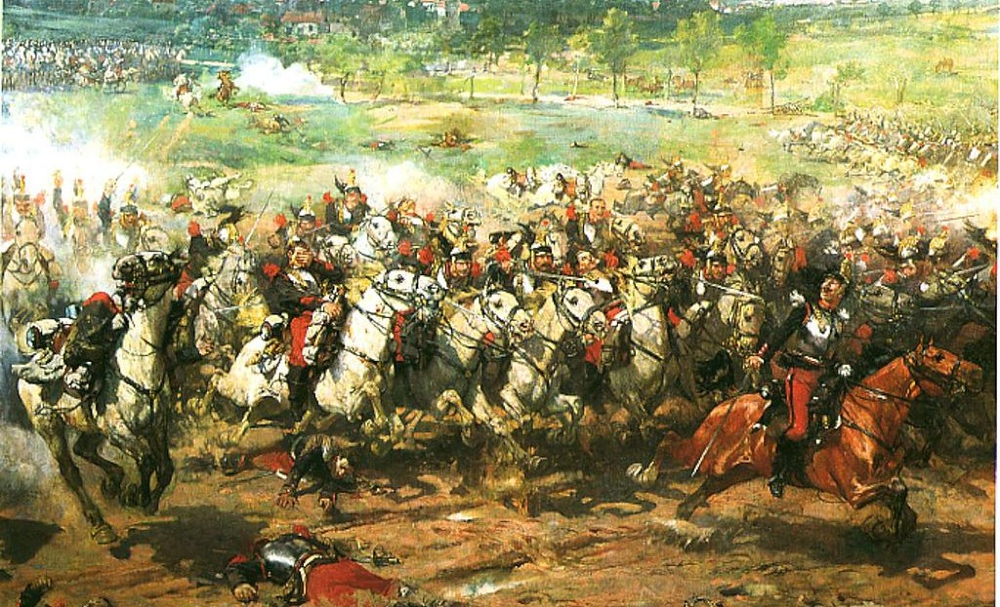
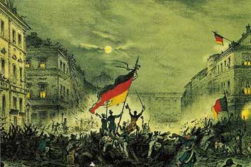
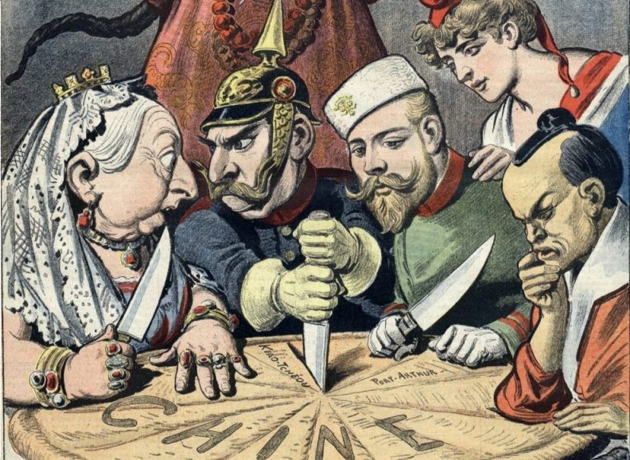
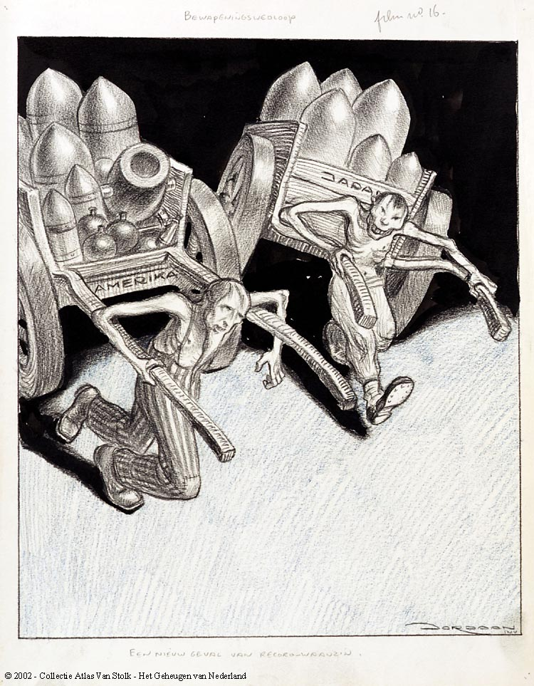
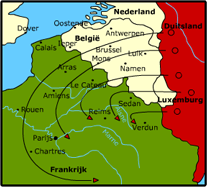
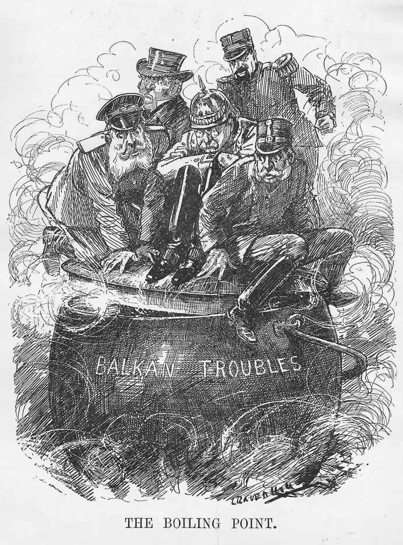
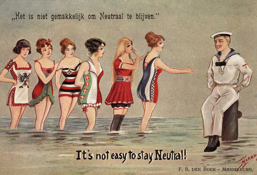
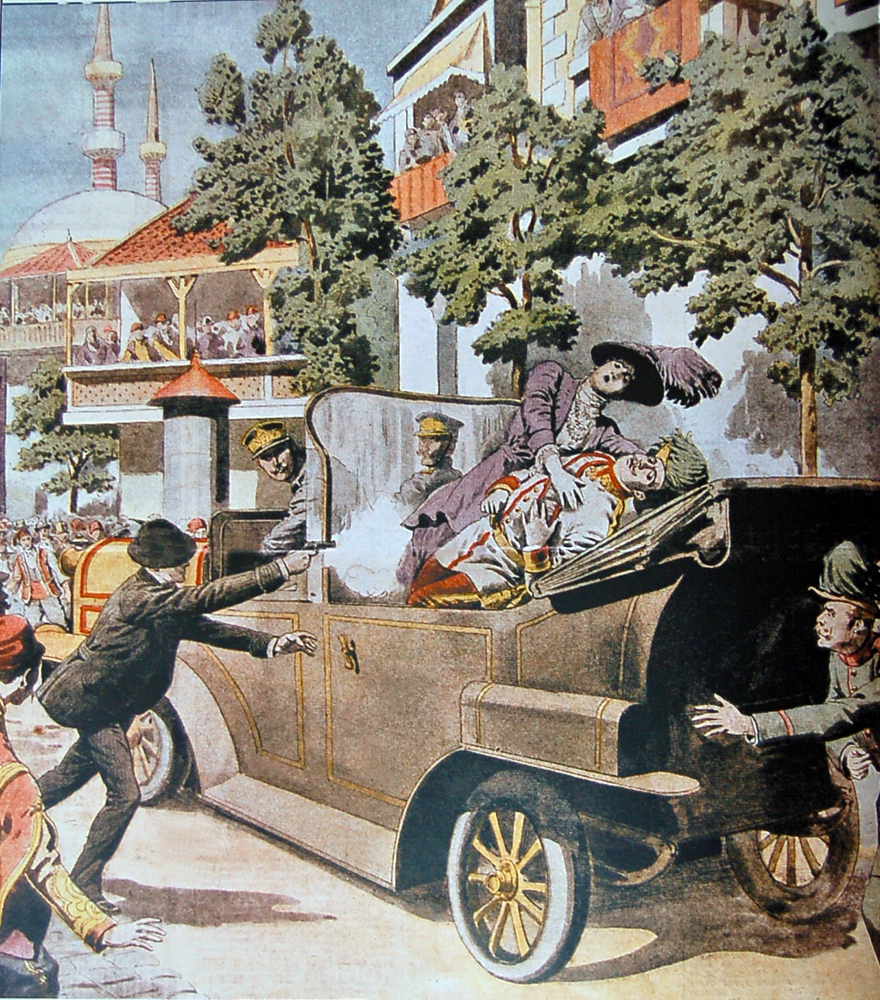

Revanchegevoelens

De Franse wilden revanche op de Duitsers vanwage de Frans-Duitse oorlog.
Deze oorlog vond plaats van 1870 tot 1871. De Franse hadden de oorlog verloren en moesten Elzas-Lotheringen aan de Duitsers afstaan.
De nieuwe Franse generatie werd aangeleerd dat de Duitsers slecht waren en het de vijand was.
Nationalisme

Rond deze tijd waren mensen erg trots op hun land. Ze vonden dat hun land namelijk superieur was.
Vanwege de superieurgevoelens wilden mensen graag het gevecht met elkaar aangaan.
Ze wilden graag een korte strijd voeren om te laten zien dat hun vaderland het beste was.
Vanwege het nationalisme waren er op het begin van de oorlog veel mensen die vrijwillig mee wilden vechten.
Modern imperialisme

Landen wilden graag koloniën en die veel landen hadden die dan ook. Er waren koloniën in Afrik, Amerika, Azië en Australië.
Veel delen van de wereld waren al ingenomen door landen, zoals Engeland, Frankrijk of België. Duitsland ontstond toen net pas uit een verenigd rijk.
Daarvoor was het ontstond het nog uit allemaal kleine Duitse staten. Hierdoor liepen ze erg achter met het verkrijgen van koloniën.
Ze hadden niet veel grond meer over en moesten het daarmee doen. Dit was niet genoeg voor keizer Wilhelm II, omdat hij graag een weltpolitiek wilden.
Economische spanningen
 Engeland was lange tijd het rijkste land van de wereld. Dat kwam vooral door hun groote en sterke industrië.
Engeland bleef de rijkste totdat de Duitsers Elzas-Lotheringen hadden verkregen.
In dit gebied waren er veel grondstoffen die handig waren voor in de fabrieken. Hierdoor groeide Duitsland uit tot een grootmacht.
Doordat Engeland niet meer het sterkste industrieële land was liepen de economische spanningen hoog op.
Engeland was lange tijd het rijkste land van de wereld. Dat kwam vooral door hun groote en sterke industrië.
Engeland bleef de rijkste totdat de Duitsers Elzas-Lotheringen hadden verkregen.
In dit gebied waren er veel grondstoffen die handig waren voor in de fabrieken. Hierdoor groeide Duitsland uit tot een grootmacht.
Doordat Engeland niet meer het sterkste industrieële land was liepen de economische spanningen hoog op.
Bewapeningswedloop

Door de industriële revolutie hadden veel landen fabrieken waar ze in groote aantallen producten maakten.
Eind 19e eeuw worden deze fabrieken vooral gebruikt om wapens, kanonnen, munitie, schepen en vliegtuigen.
Hierdoor worden de landen steeds meer bewapend en daardoor komt er een strijd.
De landen wilden namelijk allemaal de meeste wapens enzo, hebben zodat ze een eventuele stijd makkelijk konden winnen.
Doordat ze allemaal veel wapens gingen produceren en de beste wilden zijn ontstond er een competitie.
Militaire plannen

Na de Frans-Duitse oorlog werkten vooral Duitsland en Frankrijk aan militaire plannen. Ze willen zorgen dat ze voorbereid zijn op oorlog.
De Duitsers hadden het Von Schlieffenplan bedacht en verfijnt. De Fransen hadden het plan XVII. Later gingen ook andere landen plannen maken,
zodat ze niet onvoorbereid de oorlog in zouden gaan. Door de bewapeningswedloop hadden de meeste landen al wel de producten die ze nodig hadden om
hun plannen in werking te stellen.
Onrust op de Balkan

Voor de Eerste Wereldoorlog was er veel onrust in het Ottomaanse Rijk. Er werd veel gestreden door verschillende bevolkingsgroepen.
De bevolkinsgroepen werden gevoed door nationalistische gevoelens, waardoor ze graag onafhankelijk wilden zijn.
Dit vonden Rusland en Oostenrijk-Hongarije geen goed idee en proberen met geweld ervoor te zorgen dat ze groote gebieden van het vormalige
Ottomaanse Rijk in handen te krijgen.
Bondgenootschappen

Er zijn in de Eerst wereldoorlog twee belangrijke bondgenootschappen ontstaan. De Tripel Alliantie en de Tripel Entente.
Op de volgende pagina wordt daar meer over duidelijk. Als een van de landen de oorlog zou verklaren zouden alle landen uit die bondgenootschap dat doen.
De moord op Frans-Ferdinand

De moord op de Oostenrijkse kroonprins Frans-Ferdinand zorgde uiteindelijk voor het uitbreken van de Eerste Wereldoorlog.
De Oostenrijkers gaven Servië de schuld en gaf hun een ultimatum. Toen daar niet aan werd voldaan verklaarde Oostenrijk de oorlog aan Servië.